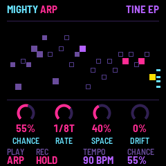
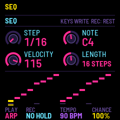
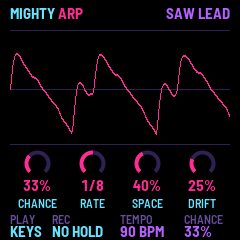

Mighty Arp
A chance arpeggiator synth for the M-VAVE FM-1
Mighty Arp, from the creator of Mighty Synth Sampler, is a 4-op FM/subtractive synth built around a chance arpeggiator. Just hold a chord and let chance play the melody. 50 sounds plus a RANDOM mode that invents new ones, a 32-step sequencer, strummed chords, shimmer reverb and more.



What it does
- A chance arpeggiator. CHANCE decides how many steps play: at 100% a classic arp, lower and it thins out into a melody. Thirteen modes, swing, humanize, octave jumps and velocity spread.
- Chords. Each note a chord in your key and scale (triads, sevenths, lush and open voicings), strummed if you like.
- A 32-step sequencer. Write steps from the keys, transpose them live with a key, ties at full gate, and the same chance.
- 50 sounds, and RANDOM makes more. Keys, bells, plucks, leads, pads, basses, percussion and weird noise textures, from four FM operators with analog-style waves, a filter and its envelope.
- Space. A chorus, a ping-pong delay and a reverb with shimmer.
- Your own presets. Sixteen slots, each keeping the sound, the arp, the sequence and the effects.
- MIDI. In over USB and the TRS jack, out over USB, with clock in or out. Over USB it is also a sound card.
Installing is at your own risk; the installer can put M-VAVE's own firmware back ("Back to the stock firmware"), as can M-VAVE's updater, M-UPGRADE, from m-vave.com/download. Mighty Arp is by Nick Culbertson. M-VAVE and FM-1 are trademarks of their owners. Mighty Arp is not affiliated with M-VAVE.